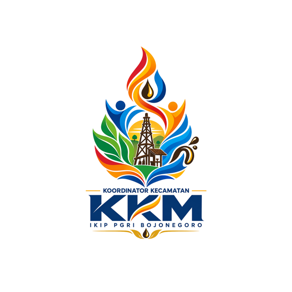

KORCAM KKM · IKIP PGRI Bojonegoro
Satu pintu masuk untuk tiga alat kerja lapangan Korcam, Kordes, dan kelompok KKM se-Kecamatan Kedewan.
Pilih Menu
Struktur Korcam, lapor progres proker mingguan per kelompok, dan dashboard pemantauan.
Formulir pendataan kondisi rumah tangga per Desa & Kelompok, lengkap unggah foto dan dashboard admin.
Formulir survei potensi wilayah — ekonomi, sosial, dan infrastruktur — untuk pemetaan awal Kecamatan Kedewan.